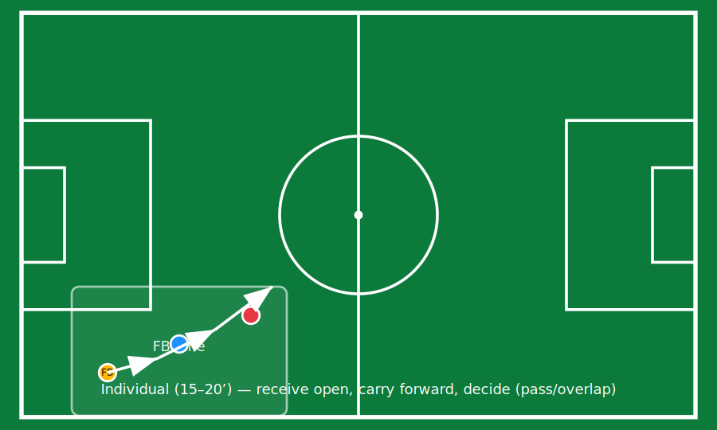

Friday Individual Session (15–20’): Full-back Progression
The individual session reinforces the week’s key behaviours without imposing excessive load prior to match day. Players are rotated, typically 1–2 individual sessions per week.
Session Structure
- Open reception: scanning + body orientation before first touch.
- Progress: carry forward into space or connect through internal corridor support.
- Decide: line-breaking pass, overlap/underlap, or retain with intention.
Progression Logic
- Phase 1: no opposition (mannequins).
- Phase 2: passive defender (guided pressure).
- Phase 3: active defender (representative duels).
Coaching Language
- “Scan early, open your hips, first touch forward.”
- “If you recycle, show explanation: you checked forward options.”

Short Individual Report (Template)
Use this to track the player’s weekly progress and link observation to training decisions.
Name:
Position (FB):
Week / Match reference:
Strengths (related to model):
-
Weaknesses / target behaviour:
-
Observed triggers for recycling backwards:
- (pressure, lack of scanning, limited interior support, etc.)
Training plan (this microcycle):
- Monday:
- Tuesday:
- Wednesday:
- Thursday:
- Friday:
Evidence (clips):
- Clip IDs / timestamps: